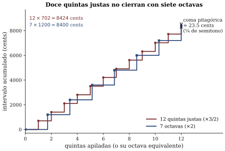

Capítulo 9 — La cuenta que no cierra (escalas y temperamentos)
Lectura previa a la sesión 09. Objetivos: OA2.3 (escalas y temperamentos, demostrados audiblemente), OA1.2 (razones y cents con aritmética), OA5.2 (continúa la serie de mediciones sobre su objeto). Para la sesión necesita traer: audífonos, EL OBJETO de su proyecto y el celular con afinador y espectrograma.
Una pregunta con trampa, dejada por usted mismo
Su ticket de salida de la sesión pasada quedó en manos del profesor y dice, más o menos: si la quinta perfectamente lisa es la razón 3:2, ¿puede un piano tener todas sus quintas lisas a la vez? Este capítulo existe para que usted llegue a la sesión con la respuesta calculada por su propia mano — porque, para variar en este curso, la respuesta no requiere más que multiplicar.
Primero, recuperemos por qué 3:2. En la sesión 08 usted vio (y oyó) que la lisura de un intervalo entre dos notas reales se juega en los parciales: si el tercer armónico de la nota grave cae exactamente donde el segundo armónico de la aguda, no hay nada que bata; si cae casi donde, hay un batido lento — ese que usted aprendió a contar en la sesión 07. La coincidencia exacta ocurre solo si las fundamentales guardan una razón de enteros pequeños: 2:1 la octava, 3:2 la quinta, 4:3 la cuarta, 5:4 la tercera mayor dulce. De aquí sale la idea madre del capítulo: un intervalo es una razón entre frecuencias, no una diferencia. Subir una octava es multiplicar por 2; subir dos octavas es multiplicar por 4. Los intervalos se apilan multiplicando.
Haga usted la cuenta
Ahora sí, el ticket. Parta de un Do cualquiera y apile quintas justas, una sobre otra: Do–Sol, Sol–Re, Re–La, La–Mi… Si conoce el círculo de quintas sabe cómo termina el paseo: después de 12 quintas los nombres de las notas se agotaron y usted está de nuevo en un Do — siete octavas arriba del punto de partida.
Aquí viene la multiplicación prometida. Si las 12 quintas fueron justas, la frecuencia final es la inicial multiplicada 12 veces por 3/2. Si las siete octavas mandan, debería ser la inicial multiplicada 7 veces por 2, es decir por 128. Tome la calculadora del celular y haga ambas cuentas antes de seguir leyendo. En serio: son dos teclas.
¿Ya? (3/2)^{12} \approx 129{,}75. Y 2^7 = 128. No da lo mismo. Las doce quintas se pasan de largo (figura 1).

El excedente parece pequeño — 129,75 contra 128, un 1,4 % — pero en afinación un 1,4 % es un mundo: es la coma pitagórica, y es la razón estructural por la que la respuesta a su ticket es no. En un teclado de 12 notas con octavas puras es aritméticamente imposible que todas las quintas sean justas. No es un problema de destreza del afinador ni de calidad del piano: es un teorema. Algo hay que sacrificar, y la historia de la afinación occidental es la historia de las distintas maneras de elegir la víctima. Esas maneras tienen nombre: temperamentos.
El cent: una regla para grietas finas
Para hablar de sacrificios de este tamaño, las razones se vuelven incómodas. La regla estándar es el cent: se divide el semitono del piano en 100 partes iguales, de modo que el semitono mide 100 cents y la octava 1200. Lo cómodo del cent es que con él apilar intervalos es sumar, no multiplicar. La quinta justa 3:2 mide ~702 cents, y la cuenta que usted acaba de hacer con potencias se convierte en aritmética de almacén:
- 12 quintas justas: 12 × 702 = 8424 cents.
- 7 octavas: 7 × 1200 = 8400 cents.
Sobran unos 24 cents (el valor fino es 23,5): la coma pitagórica es un cuarto de semitono, aproximadamente. Para calibrar cuánto es eso: un coro que termina un cuarto de semitono abajo de donde empezó no pasa inadvertido.
El temperamento del piano moderno — el temperamento igual — opta por el reparto parejo: divide la coma en 12 partes iguales y estrecha cada quinta en 23,5/12 ≈ 2 cents. El resultado es de una elegancia burocrática: ninguna quinta es justa, ninguna tonalidad es especial, todo es igualmente usable e igualmente imperfecto. La pregunta que queda flotando — y que la sesión ataca con los oídos — es qué se siente esa imperfección, y cómo diablos se construye una quinta estrechada exactamente 2 cents usando solo el oído.
Dos cents no se oyen; un batido por segundo, sí
Aquí conviene adelantar la pista clave, porque es el corazón del taller de la sesión: 2 cents es una desafinación inaudible como altura, pero perfectamente audible como batido. Si dos notas sostenidas forman una quinta casi justa, el par de parciales que casi coincide produce un batido lento — y la velocidad de ese batido delata, con precisión brutal, cuánto le falta o le sobra al intervalo. El punto exactamente sin batidos es la quinta justa; una quinta del temperamento igual, en el registro central del piano, late aproximadamente una vez por segundo. Los afinadores profesionales afinaron pianos así durante dos siglos, sin pantalla alguna: anulando batidos y luego sembrándolos a la velocidad prescrita, con un reloj en el oído (Benade 1990, sec. 16.2, describe el oficio completo).
En la sesión usted va a hacer exactamente eso, con audífonos y un oscilador afinable: recibir una quinta desafinada al azar, dejarla lisa, y luego estrecharla hasta que lata al tempo del temperamento. Dos predicciones que conviene traer escritas: ¿a cuántos cents del objetivo cree que caerá su “sin batidos”? ¿Y será más fácil o más difícil repetir la hazaña con una tercera mayor? No le adelantamos los resultados — son suyos —, pero sí el veredicto general: le va a sorprender de qué lado está la dificultad.
Lo que el compromiso sacrificó de verdad
Porque las quintas, con sus 2 cents, salieron casi gratis. La cuenta pendiente del temperamento igual se paga en otra parte: las terceras. La tercera mayor dulce — la razón 5:4 que hace coincidir parciales — mide ~386 cents; la tercera del piano mide 400. Catorce cents de diferencia, siete veces el sacrificio de la quinta, y su batido en el registro central no es un vaivén elegante sino un temblor de unas diez veces por segundo. Las terceras que usted ha oído toda su vida muelen — y es casi seguro que usted nunca lo había notado, porque el oído se acostumbra a lo que la cultura le sirve. En la sesión va a escuchar el mismo acorde mayor afinado según tres reglas distintas, y le pedimos desde ya honestidad en la votación: ¿cuál le suena “afinado”?
Las tres reglas que va a comparar tienen siglos de historia. La pitagórica apila quintas justas y deja las terceras anchísimas (~408 cents). La entonación justa fabrica terceras perfectas de 5:4 — el acorde mayor más terso que existe — pero rompe otras quintas en el proceso: sirve para un coro o un cuarteto de cuerdas que ajustan nota a nota en tiempo real, no para un teclado de afinación fija. Y entre ambas vive la familia de los temperamentos históricos (Werckmeister es el nombre que verá citado), que reparten la coma en partes desiguales: todas las tonalidades resultan tocables, pero cada una con proporciones levemente propias — cada tonalidad con su color. Cuando los tratados barrocos atribuyen carácter a las tonalidades, hay detrás algo más que literatura.
Una nota al pie que se volverá relevante para su proyecto: hasta el punto de partida es convención. El La de 440 Hz con que hoy se afina una orquesta es un acuerdo del siglo XX; el estándar de altura varió ampliamente según época y ciudad (Roederer 1997, sec. 5.4). La física no dicta ni dónde empezar ni cómo repartir la coma; dicta solamente qué batirá, y cuánto, bajo cada regla.
Su objeto tiene que decidir dónde vivir
El segundo módulo de la sesión continúa la serie de mediciones sobre el objeto de su proyecto, y la pregunta de esta semana se desprende de todo lo anterior: ¿en qué escala vive su objeto? Con el afinador y el espectrograma va a medir las alturas que produce, expresarlas como nota más desviación en cents, y emitir un veredicto: ¿está afinado respecto de alguna regla? ¿Corrido cuántos cents? ¿Y qué habría que cambiarle — longitud, tensión, masa, agujeros — para moverlo? Note el salto respecto de la radiografía de s08: ya no basta describir el espectro; ahora hay que juzgarlo contra una vara y proponer la corrección física. Ese veredicto entra a la bitácora y es insumo directo del hito 2, que se entrega la próxima sesión. Traiga el objeto aunque siga a medio construir: un objeto corrido 40 cents con explicación vale más que uno “afinado” sin medición que lo respalde.
Preguntas que la sesión va a responder
- ¿Puede un piano tener todas sus quintas justas a la vez? (Usted ya hizo la cuenta — la sesión le pone sonido al resultado.)
- ¿Con qué precisión puede afinar SU oído usando batidos: a cuántos cents del objetivo cae usted al anular un batido, y puede construir una quinta temperada contando ~1 batido por segundo?
- ¿Por qué anular el batido de una tercera mayor es otra historia que anular el de una quinta?
- Un mismo acorde mayor en entonación justa, pitagórica y temperada: ¿cuál vota usted como “el afinado” — y qué dice esa votación sobre su oído y su cultura?
- ¿En qué escala vive su objeto, cuántos cents está corrido, y qué cambio físico lo afinaría?
Referencias del capítulo
- Benade (1990), cap. 15, secs. 15.2–15.3 — origen acústico de las escalas y temperamento igual; cap. 16, secs. 16.1–16.4 — escalas justas, afinación por batidos, Werckmeister III y el color de las tonalidades.
- Campbell & Greated (1987), cap. 4 (pp. 165–182) — consonancia, origen de las escalas, entonación justa y escalas temperadas; cap. 7 — afinación de instrumentos de teclado.
- Roederer (1997), secs. 5.3–5.5 (dentro de pp. 180–211) — escalas, estándar de altura y por qué existen; sec. 2.6 — batidos de consonancias desafinadas. En español.
- Rossing, Moore & Wheeler (2002), cap. 9 (secs. 9.1–9.9) — escalas, temperamentos y cents, con ejercicios numéricos (opcional).